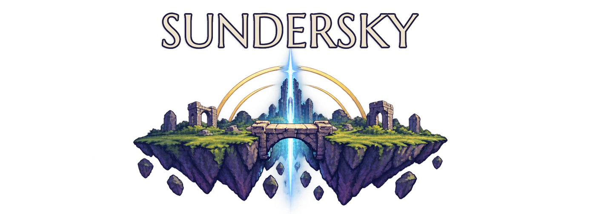

Sundersky

The heavens broke. The islands endured.
The sky broke long ago. What's left are islands drifting in the storm, and the bridges you build between them. Sundersky is a strategy game about claiming the sky one span at a time: anchor your bridges, protect your Ancestor, harness energy, and drive your rivals from the sky.
In developmentContact: hello@sundersky.gg